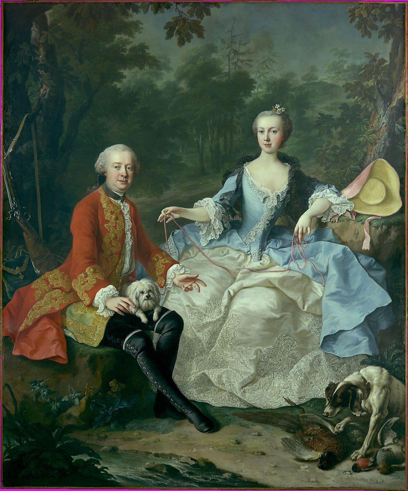

<head>
<meta charset="UTF-8" />
<meta name="keywords" content="drawing, painting" />
<meta name="description" content="drawings by Sunjy" />
<title>Sunjy</title>
<link rel="shortcut icon" type="image/x-icon" href="../../mImages/mCommon/favicon.ico" media="screen" />
<link rel="stylesheet" type="text/css" href="../../mCsses/mCommon/mCssA.css" />
<link rel="stylesheet" type="text/css" href="../../mCsses/mCommon/mCssB.css" />
<link rel="stylesheet" type="text/css" href="../../mCsses/mCommon/mCssC.css" />
<link rel="stylesheet" type="text/css" href="../../mCsses/mCommon/mCssD.css" />
<link rel="stylesheet" type="text/css" href="../../mCsses/mContent/mCssA.css" />
<link rel="stylesheet" type="text/css" href="../../mCsses/mContent/mCssB.css" />
<link rel="stylesheet" type="text/css" href="../../mCsses/mContent/mCssC.css" />
<link rel="stylesheet" type="text/css" href="../../mCsses/mContent/mCssD.css" />
</head>
<script type="text/javascript" src="../../mScripts/mContent/mContentAA.js" /></script>
<script type="text/javascript" src="../../mScripts/mContent/mContentAB.js" /></script>
<script type="text/javascript" src="../../mScripts/mContent/mContentAC.js" /></script>
<script type="text/javascript" src="../../mScripts/mContent/mContentAD.js" /></script>
<script type="text/javascript"></script> 
<script type="text/javascript">
document.write('<div class="mImgAbsolute"></div>');
/*
document.write('<p class="mFontSizeBColor" />From a white paper...</p>');
document.write('<table class="center"><tr><td>');
document.write('');
document.write('</td></tr></table>');
*/
</script>


<script type="text/javascript">
document.write('<p class="mFontSizeBColor" />Count Giacomo Durazzo in the Guise of a Huntsman with His Wife (Ernestine Aloisia Ungnad von Weissenwolff) </p>');
document.write('<p class="mFontSizeSColor" />By Martin van Meytens the Younger, probably early 1760s. The sitter, a Genoese diplomat, arrived in Vienna in 1749. A year later he married a socially prominent eighteen-year-old beauty, Ernestine Aloisia Ungnad von Weissenwolff. As director of the imperial theaters from 1754 until 1764, Durazzo promoted Gluck&#39;s reform of Italian opera. This portrait probably dates to the early 1760s, shortly before Durazzo&#39;s departure for Venice.<br><br>Martin van Meytens was born in Stockholm, where his father had emigrated from Holland. In 1717 he moved to Paris and worked there as a portrait-miniaturist. He travelled widely in Germany, Italy, and Austria, before accepting in 1731 the position of official painter at the imperial court at Vienna.</p>');
document.write('<table class="center" /><tr><td>');
document.write('<br>Martin van Meytens was born in Stockholm, where his father had emigrated from Holland. In 1717 he moved to Paris and worked there as a portrait-miniaturist. He travelled widely in Germany, Italy, and Austria, before accepting in 1731 the position of official painter at the imperial court at Vienna." />');
document.write('</td></tr></table>');
</script>


